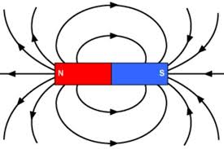
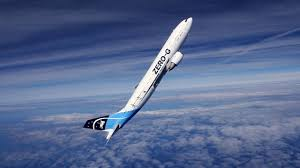
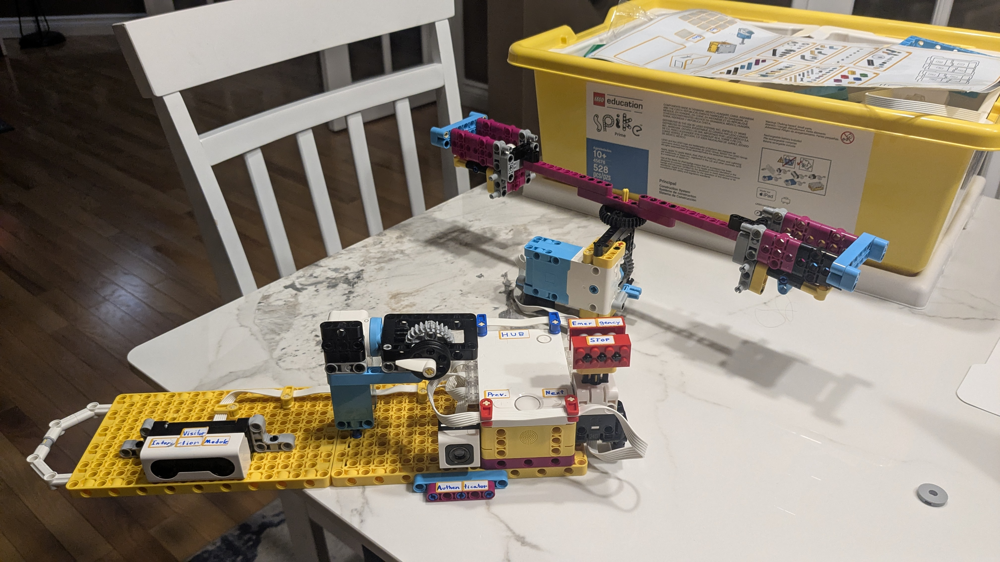

We first thought of using magnetic suits and magnetic floors for astronauts to use.
However, this idea would not yield the best resuts, as the the magnetic field created would not be able to sustain a consistent force on a moving object. The result would be a disaster.
We then idealized something called a Zero-G plane. These planes work by simulating free fall, which oddly feels like weightlessness. This prototype was cheap, efficient, and reliable.
However, there were some issues with it.
Finally, we moved onto an artificial gravity centrifuge. This is a brilliant design choice because it involves the use of rotation to manifest centrifugal force, which creates a sensation of artificial gravity!
There are many considerations involved for such a prototype:
| Prototype | Main Strength | Major Weakness |
|---|---|---|
| 1: Magnetism | Easy to explain-- fits scientific communication better. | Hard to maintain, and doesn't accurately simulate gravity. |
| 2: Zero-G Plane | Very cost efficient. | Does not work in space with stable orbits, and poses consistency risks. |
| 3: Artificial Gravity Centrifuge | Mechanically sound, reliable, and easy to scientifically communicate. | Incredibly expensive |